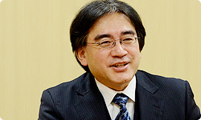

<div class="l-category-local-header">
<div class="category-local-header">
<div class="category-local-heading"><span>社長が訊く</span>
<div class="category-local-sub">IWATA ASKS


<div class="l-soft-topic-path is-block">
<div class="l-soft-topic-path-inner">
<div class="soft-topic-path">
<ul class="topic-path"><li class="topic-path-item"><span>『Wii U』 インターネットブラウザー篇</span></li></ul>


<div id="page-container">
<header class="interviewheader">
<h2 class="interviewheader__ttl"><span class="subtext">社長が訊く</span>『Wii U』</h2>

</header>
<div class="tabmenu-container">
<p class="tabmenu__ttl">シリーズ一覧
<ul class="tabmenu__body tabnum12">
<li class="tabmenu__item tab1">本体 篇</li>
<li class="tabmenu__item tab2">Wii U GamePad 篇</li>
<li class="tabmenu__item tab3">Miiverse プロデュース 篇</li>
<li class="tabmenu__item tab4">Miiverse 開発スタッフ 篇</li>
<li class="tabmenu__item tab5">インターネットブラウザー 篇</li>
<li class="tabmenu__item tab6">Wii U Chat 篇</li>
<li class="tabmenu__item tab7">New スーパーマリオブラザーズ U 篇</li>
<li class="tabmenu__item tab8">ZombiU（ゾンビU） 篇</li>
<li class="tabmenu__item tab9">Nintendo×JOYSOUND Wii カラオケ U 篇</li>
<li class="tabmenu__item tab10">Nintendo Land 篇</li>
<li class="tabmenu__item tab11">Nintendo TVii 篇</li>
<li class="tabmenu__item tab12">Wii Street U powered by Google 篇</li>
</ul>

<div class="hero-container">
<div class="hero__img">

<div class="interviewsubheader">
<div class="interviewsubheader__ttl"><h2>インターネットブラウザー篇</h2>

<div class="pageindex-container">
<p class="pageindex__ttl">目次
<ul class="pageindex__body">
<li class="pageindex__item">1. 「隠すことが強みになる」</li>
<li class="pageindex__item active">2. 手元でさわって、大画面で大きく</li>
<li class="pageindex__item">3. テレビ＋ブラウザーの決定打に</li>
</ul>

<div class="interview-container">
<h3 class="interview__ttl">2. 手元でさわって、大画面で大きく</h3>

岩田
: 実際に、ブラウザーが実機で動き出したときの<br>手ごたえはどうでしたか？


佐々木
: 正直に言うと、はじめてさわったときは<br>「こんなところか・・・」というレベルだったんですが、<br>3DSを終えたチームが合流してひとつになり、<br>半年後にチューニングされたものを見たら、<br>見ちがえるほどいい手ざわりになったんです。<br>「あっ、ゲーム機でここまでできるんだ！」って<br>素直に驚きました。


岩田
: いい感じのフレームレート（※11）で、<br>動くようになったんですよね。

※11
フレームレート＝１秒間にいくつのフレーム（映像やコマ）が処理されるかという値。


佐々木
: そうです。WebKitという技術は、<br>オープンソース（※12）でできている分、<br>なんというか、すごく荒削りな技術なんです。<br>世に出ている商品すべてが個々に<br>安定させるために努力をしている状態で、<br>ＵＩは複雑なチューニングが必要なんです。


※12オープンソース＝ソフトウェアの設計図にあたるソースコードを、無償で公開し、自由にそのソフトウェアの改良、再配布が行えるようにすること。


岩田
: オープンソースのWebKitの中に、<br>ＵＩ部分は含まれていないわけで、<br>自前でつくる必要があるんですね。<br>WebKitは、HTMLを解釈して<br>画面を描画してくれるライブラリー群に加えて、<br>JavaScriptなど、本当にブラウザーを実現するうちの<br>一部でしかないわけですよね？


佐々木
: はい。WebKitというもの自体に、<br>「レイヤーに分かれた絵をつくって、<br>　それらをどのように重ね合わせて、<br>　それをどれくらいのサイズで描くと、<br>　スクロールしたとき手ざわりがいいか」といった<br>チューニング前提の部分が山ほどあります。<br>そこをいかにセンスよくまとめられるかが<br>非常に重要になってくるので、<br>そこは本当に、ハル研さんのエンジニアのみなさんの<br>チューニングのたまものだと思っています。


岩田
: それは、3DSと比べてWii Uが、<br>ＣＰＵがパワフルだったり、<br>たくさんメモリーが使えるということだけで<br>実現できたわけではないんですか？


佐々木
: もちろん、その恩恵は大きいんですけど、<br>実際にはさまざまな最適化を施した結果です。<br>たとえば、3DSで培ったＵＩとブラウザーエンジンの<br>非同期化（※13）を進化させたことで、<br>ほぼ秒間６０フレームをキープしながら<br>滑らかに操作できるようになりました。<br>また、タッチしたときのフィードバック、<br>ウェブページを行き来したときの演出なども<br>ゲーム機らしく快適に反応するような工夫もされています。

※13非同期化＝時間のかかる処理（画面作成など）が終わるのを待つことなく、一定の間隔で割り込んで必要な処理（ユーザーの操作など）を行うこと。


岩田
: これは余談なんですけど、<br>ちょっと前のことなんですが、<br>海外子会社の方々が来日されたときに、<br>そのとき開発途中のソフトをいろいろお見せしたんですね。<br>そのときの雑談のなかで、<br>「今回いちばん感動したのは何ですか？」って聞いたら、<br>「Wii Uのブラウザーです」って言う方がいたんです。


佐々木
: そうなんですか（笑）。


岩田
: 「ゲーム機とは思えない、本当に使えるブラウザーだ」と。<br>いままで長くこの仕事をしていますが、<br>当時、まだWii Uのゲームの完成度が低かったことや、<br>ちょうどそのときは、新しいゲームを<br>見せられなかったという事情があったとはいえ、<br>いろんなソフトを見てもらって<br>「ブラウザーがいちばん印象的だった」と言って、<br>帰った社員がいたっていうのは、<br>はじめてのことで、びっくりしました。




津田
: でも、素直にうれしいです。


岩田
: でも、それを実現するためには、じつは、<br>ただごとではない苦労があったんじゃないですか？


佐々木
: プログラムって、高速化は後まわしにしてつくることが<br>世の中ではわりと多いんですが、<br>このブラウザーのプロジェクトでは、<br>当初から高速化を常に意識していました。<br>実際に、世の中のウェブサイトの挙動を一つひとつ確認しながら、<br>遅い部分や問題がある部分を発見しては、<br>解決していく作業を繰り返したのが効いていると思います。<br>「このサイトはなぜ遅いんだろう？」<br>「このサイトはタッチしても反応が鈍いのはなんでだろう？」<br>といった感じで、結局は一つひとつ問題点を発見していきながら、<br>各協力会社さんの役割の垣根を越えて、<br>全員で問題解決にあたってきたことが大きいと思います。


岩田
: 津田さんが仕様をつくっていく過程のなかで<br>新たに気づいて、変えていったことはありますか？


津田
: はい。ひとつは去年（２０１１年）のＥ３（※14）の前に<br>宮本（茂）さんから出されていた課題で、<br>「テレビ画面で小さな文字が映し出されたとき、<br>　手元のWii U GamePadの画面で<br>　大きく表示してルーペのように動かせないか？」<br>という話があったんです。<br>当時まだ実機でほとんど動かせていない状態で、<br>ＰＣ上ではイメージがわかなかったんです。

※14Ｅ３＝Electronic Entertainment Expo（エレクトロニック エンターテインメント エキスポ）の略で、米国のロサンゼルスで開催されるコンピューターゲーム関連の見本市のこと。


岩田
: ジャイロセンサー（※15）などを使う機能になると、<br>実機でないとなかなか実感できませんからね。

※15ジャイロセンサー＝Wii U GamePadに搭載された、傾きを検知するセンサー。


津田
: はい。その後、実機が届いて、<br>いろいろ実際にやってみたんですけど、<br>「もうひとつ何か足りない」と<br>佐々木さんや上司からずっと言われていたんです。<br>それであるとき佐々木さんから、<br>「自由に動かすのをやめて、制限をかけたほうが<br>　いいんじゃないか？」って言われて、<br>スクロールを縦だけにしてみたんです。


岩田
: ああ、左右にしょっちゅう行かなきゃいけないページは、<br>むしろ「ウェブページのデザインが悪い」と言えますからね。


津田
: そうなんです（笑）。<br>そこで縦に固定したら操作性が格段に良くなって、<br>Wii U GamePadを傾けることで画面スクロールできる<br>“ジャイロスクロール”というモードができました。<br>タッチスクリーンだけではなく、<br>ハードを利用して快適になるところが、<br>「Wii Uらしくて、いい感じになった」と思っています。


岩田
: タッチスクリーンだけで実現しようとすると、<br>何回も指を動かさなきゃいけないけれど、<br>そこをヒョイッと、Wii U GamePadを傾けるだけで<br>直感的にできる感じがいいですね。


津田
: 開発していく過程で、<br>そこらへんはどんどん変わっていきました。


岩田
: そう考えていくと、<br>Wii Uがブラウザーとして有利な点は、<br>すごくたくさんあるんですよね。


津田
: そうですね。<br>手元でさわって動かせる画面がありつつ、<br>離れた距離で眺めるだけに特化した画面もあるという<br>両立性がマッチしていると思います。


岩田
: 佐々木さんはどう思いますか？


佐々木
: 先ほどの動画の話にも関連するんですが、<br>「ＰＣやスマートデバイスで見るのに最適なもの」と、<br>「大画面で大きくして見たいもの」という、<br>２種類のコンテンツがネットにはあるんですが、<br>Wii Uのブラウザーは、<br>その両方のニーズにぴったり合っている気がしています。


岩田
: ちょうどそういう時代になってきた、<br>ということですか？


佐々木
: そうですね。逆に言うと、<br>これまでのインターネットは、<br>どうやってもテレビで見ることに<br>向いてなかったんじゃないかとも思います。


岩田
: 文字を読むことや、入力すること、<br>そして、何かをポイントすることは、<br>ぜんぶテレビが苦手なことなんですよね。<br>これは、画面が近いほうが有利なんです。<br>ところが、映像を見ることに関しては<br>圧倒的にテレビのほうが快適ですし、<br>とくに複数の人で楽しめる強みが出てきます。<br>Wii Uなら手元で文字の読み書きができ、<br>ポインティングもでき、<br>もちろん大画面テレビにも映すことができる。<br>そういった利点がつながることで、<br>みんなと共有して楽しめる<br>「ちょっとおもしろい存在になったな」<br>と思いますね。


津田
: そうですね。<br>ひとりだけのものじゃないという前提なんです。


岩田
: ある種、パーソナルなものなのに、<br>その部屋にいる人が行き来している感じがあります。<br>わたしはあのカーテン機能をはじめて見たとき、<br>とても衝撃を受けて、社内のあちこちで<br>「すごいものができた！」って<br>吹聴して歩いていたんです（笑）。


津田
: ありがとうございます（笑）。


岩田
: 隠すことを思いついただけでなくて、<br>カーテンの演出を付けるのがおもしろいなぁと。<br>でも、そもそもなぜカーテンだったんですか？


津田
: 「テレビを隠す」ということを考えたら、<br>昔のブラウン管のテレビの時代を思い出したんです。


岩田
: え・・・？ けっこう昔ですよね、それは（笑）。<br>テレビが家具のように扱われていたのは、<br>わたしの子供の頃の時代の話ですから。


津田
: そうです、そうです（笑）。<br>カーテンとか、扉付きの台に収納されていた、<br>「あの雰囲気を再現したいなあ」と思ったんです。


岩田
: 津田さんは、まだ生まれていない時代じゃないですか？<br>そんな発想が津田さんの世代から<br>出てくるっていうのは、ちょっと意外です。


一同
: （笑）


岩田
: でも、あのカーテンプレゼンテーションは、<br>きっといろんな家で、<br>おもしろいことをする人が現れそうですよね。<br>あれこそ“手元と向こう側の両方がある強み”になる気がします。


<li class="pagination-prev"><span>1. 「隠すことが強みになる」</span></li>
<li class="pagination-next"><span>3. テレビ＋ブラウザーの決定打に</span></li>
</ul>
<div class="listbtn-container">
<p class="listbtn__item">社長が訊く 一覧

